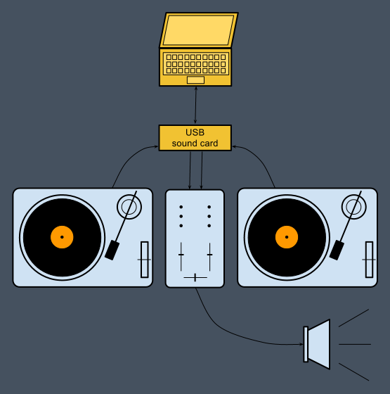

To use Digital-Scratch you need to play a "timecoded" vinyl disc such as the Serato Scratch Live record (it contains data for motion analysis). Then, instead of connecting your turntable to your mixer, plug it to the line input of a sound card (an external USB card for example). And finally, connect the sound card output to the mixer.
Load a tune on left or right deck of Digital-Scratch and start your turntable. When you are changing speed and direction on the turntable, the track is played accordingly.
Since Digital-Scratch supports JACK as sound card "driver", you have to run Digital-Scratch on a properly configured JACK environment. For a 2 turntables DJ set you need 2 available virtual stereo inputs and outputs in JACK.
